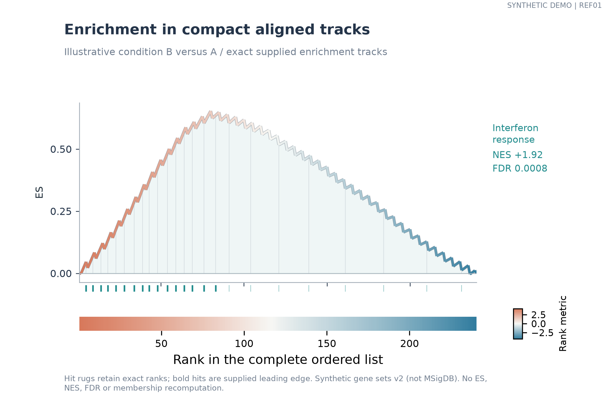
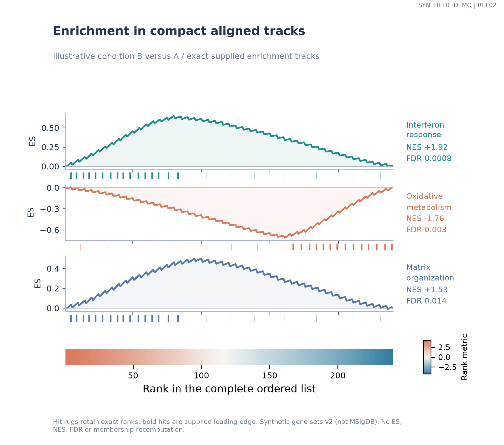
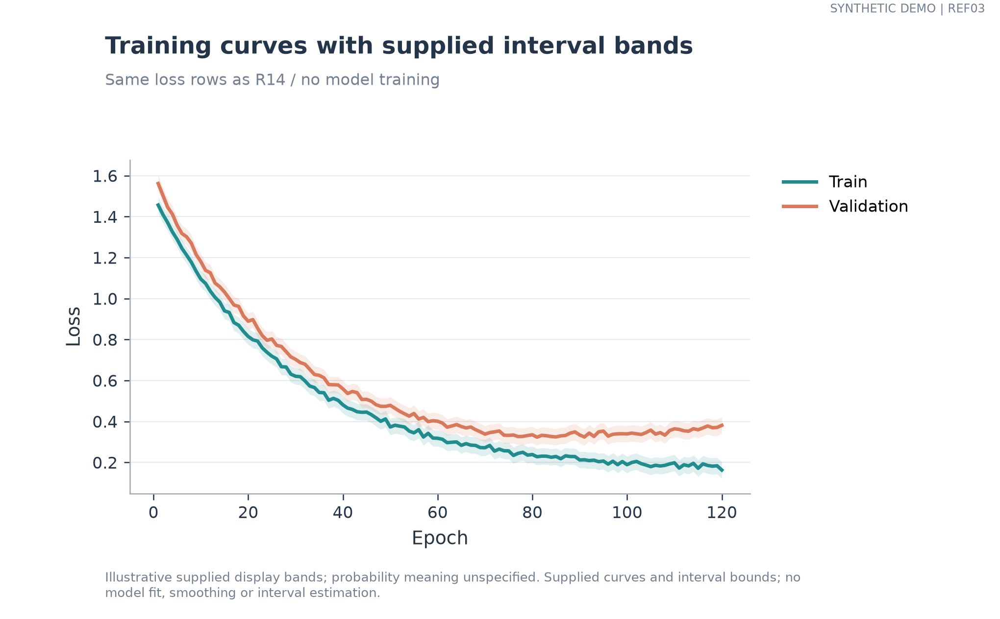
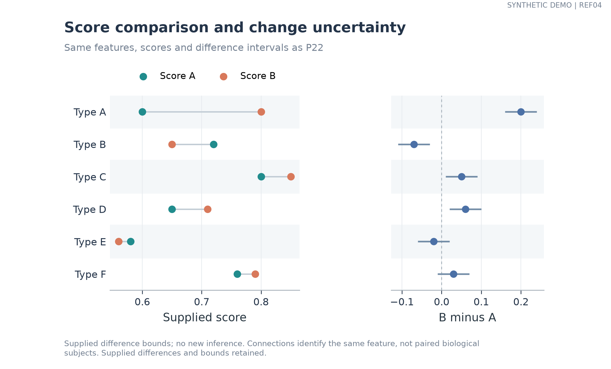
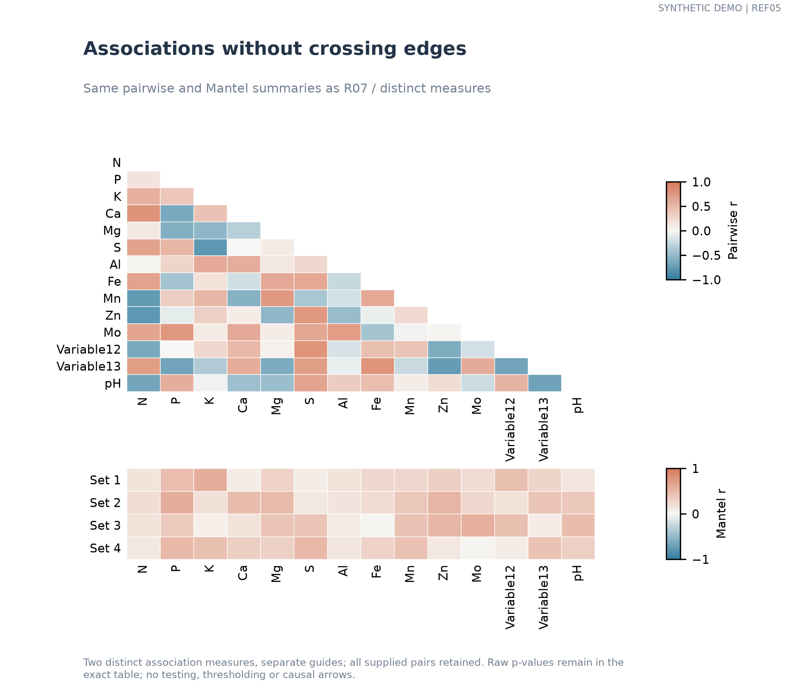

REF01 | gsea_strip

complete selected GSEA export
Independently implemented frozen-result examples; no upstream packages, inference or smoothing.

complete selected GSEA export

complete selected GSEA export

all 240 loss rows; other dashboard record types excluded explicitly

all rows

all 91 pairwise and 56 Mantel summaries